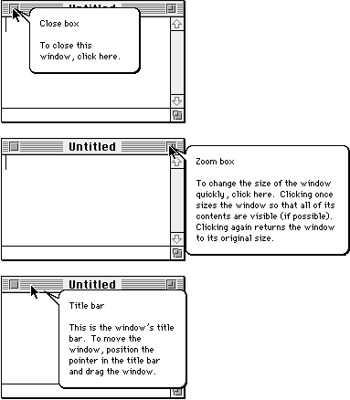
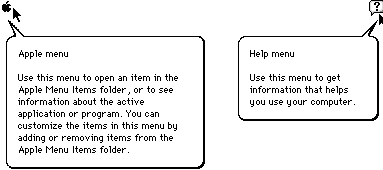
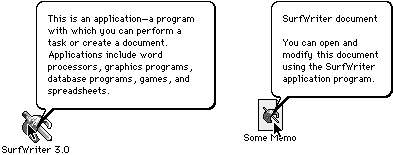

Legacy Document
Important: The information in this document is obsolete and should not be used for new development.
Important: The information in this document is obsolete and should not be used for new development.


Default Help Balloons for Menus, Windows, and Icons
The Help Manager displays many default help balloons for an application when help is enabled and the user moves the cursor to certain standard areas of the user interface. These areas include the standard window frame and the menu titles and menu items in the Apple menu, Help menu, Keyboard menu, and Application menu. You don't need to create any resources or use any Help Manager routines to take advantage of the default help balloons.The following list summarizes the items that have default help balloons.
System software uses the Help Manager to display help balloons for most of its dialog boxes and alert boxes. (For example, the Standard File Package provides help balloons for its standard file dialog boxes.) If your application uses a system software routine (such as the
- Application icon in the Finder. Default help balloons are also provided for desk accessory, system extension, and control panel icons. You can override these help messages.
- Document icon in the Finder. You cannot override the help message for this icon.
- Standard file dialog boxes. You supply balloons for items that you add to these dialog boxes; you cannot override the help messages for the other items.
- Window title bar. A default help balloon is provided for the title bars of windows created with both standard and custom window definition functions (WDEFs). You can override the default help message.
- Window close box. A default help balloon is provided for the close boxes of windows created with both standard and customized WDEFs. You can override the default help message.
- Window zoom box. A default help balloon is provided for the zoom boxes of windows created with both standard and customized WDEFs. You can override the default help message.
- Inactive window. You can override the default help message for inactive windows.
- Apple menu title. The default help balloon for the title of the Apple menu is available only if your application uses the standard menu definition procedure. You cannot override the default help message for this title.
- Apple menu items. Default balloons are provided for items that the user moves to
the Apple Menu Items folder, but there is no default balloon for the About command or other items that your application adds to this menu; you must provide help balloons for such items.- Help menu title. The default help balloon for the title of the Help menu is available only if your application uses the standard menu definition procedure. You cannot override the default help message for this title.
- Help menu items. Default balloons are provided only for the About Balloon Help and Hide/Show Balloons commands; you must provide help balloons for items you add to this menu. You cannot override the default help messages.
- Application menu title and items. Default help balloons for the title and items of
the Application menu are available only if your application uses the standard menu definition procedure. You cannot override these default help messages.- Keyboard menu title. The default help balloon for the title of the Keyboard menu is available only if your application uses the standard menu definition procedure. You cannot override the default help message.
StandardPutFileprocedure) that provides help balloons, and the user has enabled Balloon Help assistance, the Help Manager displays each help balloon as the user moves the cursor to each hot rectangle. If you've added your own buttons, checkboxes, or other controls to such a dialog box or alert box, you can also provide these controls with help balloons.The Help Manager uses the window definition function of a window to determine whether the cursor is in the window frame and, if so, which region of the window (title bar, close box, or zoom box) the cursor is in. If the cursor is in any of these regions, the Help Manager displays the associated help balloon. Figure 3-6 shows the default help balloons for the active window of an application that uses the standard window definition function. If you use a custom window definition function, the Help Manager also displays these default help balloons for the corresponding regions of your windows.
Figure 3-6 Default help balloons for the window frame
 The Help Manager also provides these default help balloons for the title bars, close boxes, and zoom boxes of windows in the Finder. The Finder specifies additional help for other window regions--for example, the scroll bar and size box--although the Help Manager does not automatically provide your window with this help.
The Help Manager displays help balloons for the standard window frame and other standard areas named in the
'hovr'resource. You can override any of the default help balloons defined in the'hovr'resource by providing your own resource of type'hovr'. See "Overriding Other Default Help Balloons" on page 3-80 for more information.The Help Manager displays default help balloons for the Apple menu, Help menu, and Application menu. The Menu Manager uses the Help Manager to display help balloons for these menus regardless of whether you supply help balloons for the rest of your menus. The Help Manager also provides default help balloons for the Keyboard menu when a non-Roman script system is installed. Figure 3-7 shows the default help balloons for the Apple menu and Help menu titles.
Figure 3-7 Default help balloons for the Apple and Help menus
- Note
- For all menus and menu items, the Help Manager displays help balloons only for applications that use the standard menu definition procedure. If you use your own menu definition procedure, your application must track the cursor and use Help Manager routines to display and remove help balloons, as described in "Displaying and Removing Help Balloons" on page 3-92.

 The Help Manager does not provide default help balloons for items you put at the top of your application's Apple menu or items you add to the Help menu. You typically put one item at the top of the Apple menu: the About command for your application. If you have additional user help facilities, list them in the Help menu--not in the Apple menu. You have control only over those items that you add to the Apple and Help menus.
The Finder provides default help balloons for your application icon and any documents created by your application. Figure 3-8 shows the default help balloon for the SurfWriter application and a document created by this application. You can customize the help balloon for your application icon by providing an
'hfdr'resource; however, you can't customize the default help balloon for the documents created by your application.Figure 3-8 Default help balloons for application and document icons
